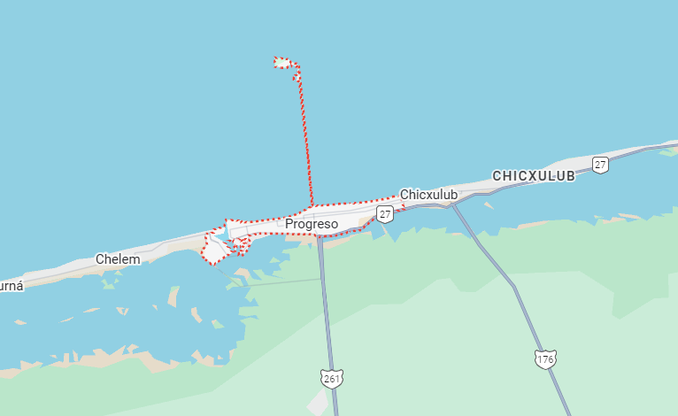

Es el puerto más importante del estado de Yucatán, ubicado a unos minutos de Mérida. Fundado en 1871, se desarrolló como un punto clave para el comercio marítimo y la exportación de henequén. El puerto destaca por su icónico malecón, sus amplias playas y el muelle más largo de México, que se adentra varios kilómetros en el mar. Progreso refleja la vida costera yucateca, combinando tradición pesquera con turismo y actividades recreativas. Hoy es un destino popular por su ambiente tranquilo, su gastronomía marítima y su cercanía a la capital del estado.
Ubicación |
Información Esencial
|